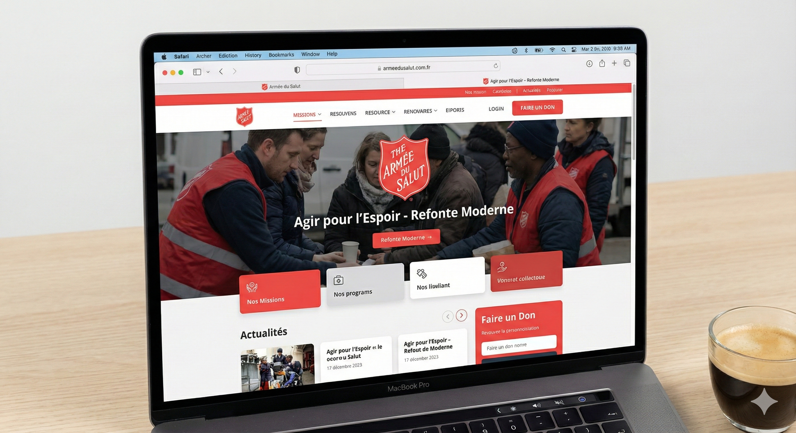
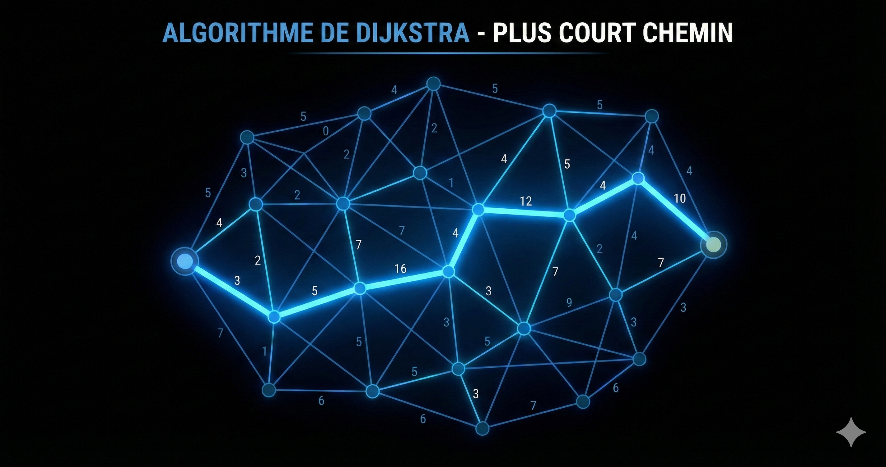
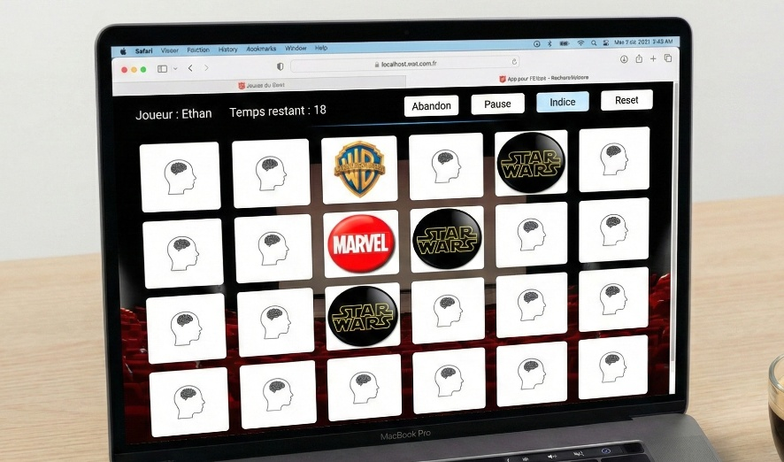
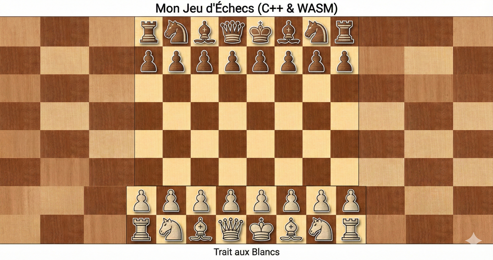
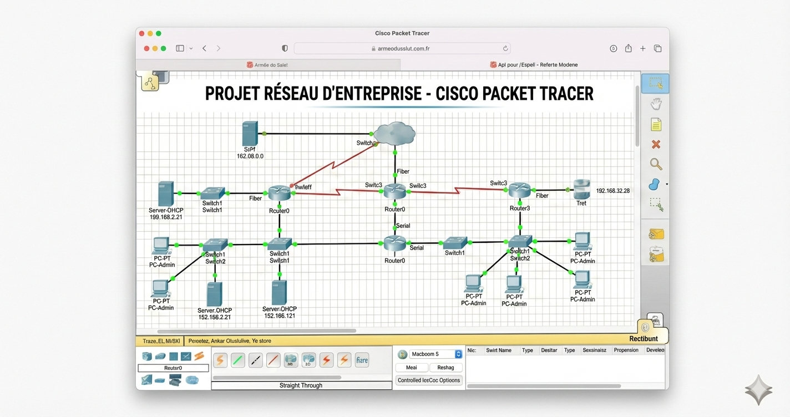
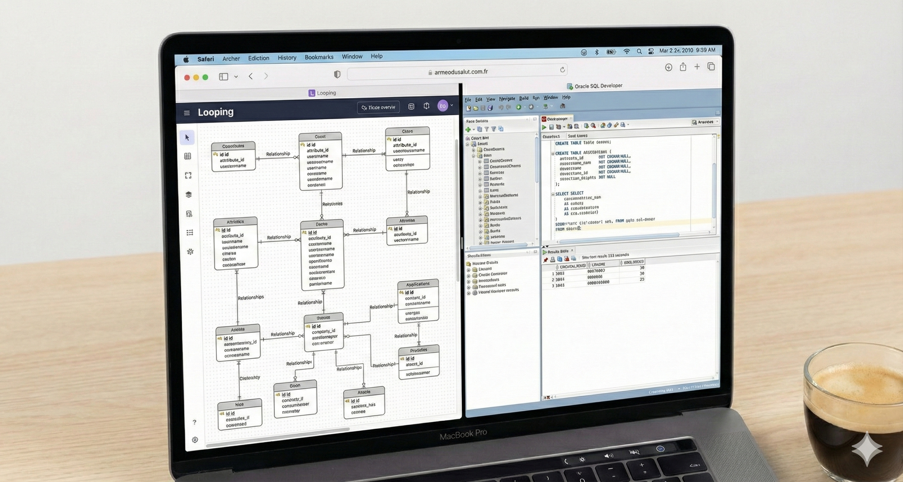
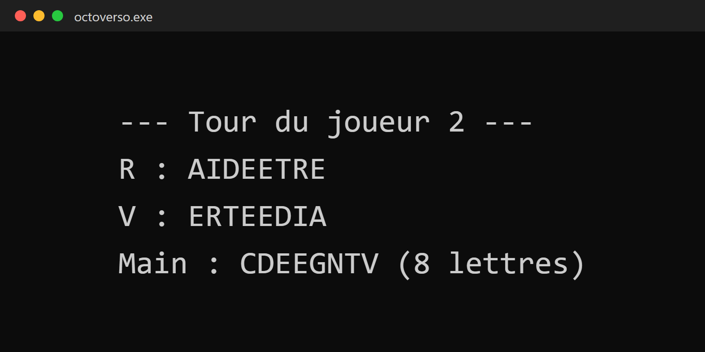
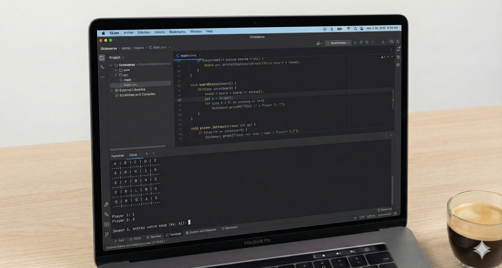

Étudiant en BUT2 Informatique à l'Université Paris Cité • Recherche un stage de 8 semaines à 16 semaines à partir du 6 avril 2026.
Java, C/C++, Python, Javascript, VB.NET, SQL, HTML/CSS, PHP
Responsive design, Bootstrap, accessibilité, optimisation visuelle, Requêtes HTTP (GET/POST), JSON, Appels API (bases)
MySQL, PostgreSQL, PL/SQL, requêtes CRUD et jointures
Linux (permissions, fichiers, commandes shell), Protocoles réseau (TCP/UDP, HTTP, DNS — notions), Assembleur x86 (notions)
POO, Modélisation UML, Interfaces graphiques, Structures de données
Travail en équipe, Git workflow, Documentation de projets, Méthodologie Agile (Scrum), Maquettage, principe SOLID
VS Code, IntelliJ IDEA, Eclipse, Sublime Text
Linux (Ubuntu/Debian), VirtualBox, VMWare
Looping (MCD)
Jira (Méthode Agile), Trello, Notion, Microsoft Teams, Discord, Suite Office
Figma, Canva, Maquettage papier
Git, GitHub, GitLab, JUnit

Refonte moderne de plusieurs pages du site : amélioration de l’ergonomie, correction des incohérences graphiques, optimisation visuelle et ajout d’une navigation plus intuitive.
Technologies utilisées :

Algorithme de recherche du plus court chemin dans un graphe pondéré, utilisé pour trouver le trajet optimal entre deux nœuds, avec visualisation dans un labyrinthe.
Technologies utilisées :

Jeu de mémoire pour 2 joueurs, réalisé en VB.NET avec gestion du plateau, comparaison des cartes, affichage du score et fin de partie automatique.
Technologies utilisées :

Développement d'un jeu d'échecs complet respectant les règles officielles. Implémentation de la logique de déplacement des pièces, validation des coups, détection des échecs et mat, et gestion de l'interface graphique pour deux joueurs.
Technologies utilisées :

Conception et simulation d’une topologie réseau d'entreprise complète. Configuration du routage, des commutateurs et segmentation par VLANs. Déploiement et sécurisation des services essentiels (DHCP, DNS, Serveur Web).
Technologies utilisées :

Analyse du contexte métier et modélisation des données (MCD/MLD). Normalisation de la base pour garantir l'intégrité des données. Implémentation de la structure et rédaction de requêtes SQL complexes pour l'exploitation.
Technologies utilisées :

Jeu de lettres stratégique en C : former des mots avec des tuiles double-face sur un rail pivotant. Gestion du plateau, des tours et de la fin de partie.
Technologies utilisées :

Application console permettant de suivre les absences des étudiants, défaillance automatique après 5 absences, stockage et affichage des résultats.
Technologies utilisées :